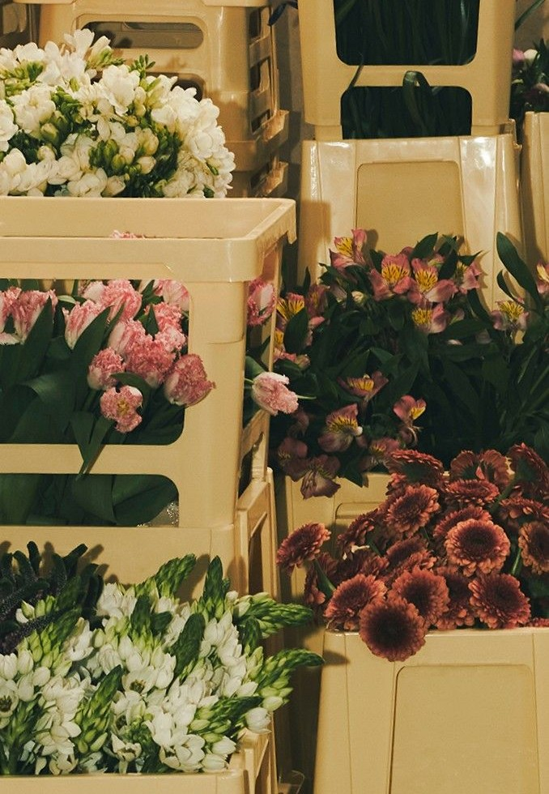

L'idea
Siamo tre ragazzi con la passione per la natura e un po’ di voglia di semplificarci la vita (e magari anche quella degli altri). Questo sito è nato proprio da un’esigenza reale: prenderci cura delle nostre piante non era sempre facile — tra impegni, dimenticanze e indecisioni su quali piante scegliere, spesso finivamo per trascurarle.
Così abbiamo pensato: perché non creare uno spazio che ci aiuti a gestire tutto in modo semplice? È da qui che è nato Fladale.
Il sito si divide in tre parti principali. C’è il giardino personale, dove ognuno può tenere traccia delle proprie piante preferite, vedere quanta acqua hanno bisogno e ricevere promemoria per non dimenticarsene. Poi c’è la sezione consigli, utile per capire quali piante sono più adatte a ogni ambiente della casa, come il bagno o il salotto.
Infine c’è la parte scopri, che ti permette di esplorare nuove piante in base alle tue esigenze, così scegliere diventa più facile e ragionato.
Abbiamo costruito Fladale per dare una mano a chi, come noi, ama il verde ma ha bisogno di un piccolo aiuto per prendersene cura. E anche per provare a trasmettere, nel nostro piccolo, un po’ di amore per la natura a chi ci sta intorno.